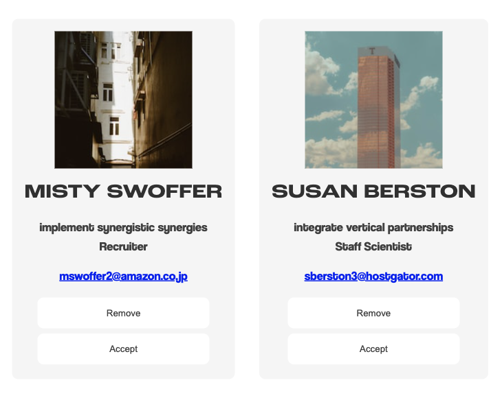
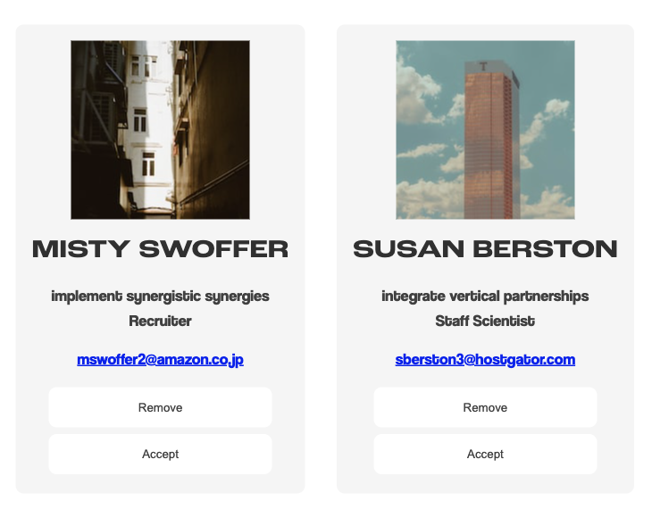

In this assignment we had to pair fonts and implement a font hierarchy, but also work a bit with cards. During class we did a small research to find out that the „trend” nowadays for UI cards includes small rounded corners, a slight drop shadow and no outlines. I implemented these in my solution as well. For the fonts, I chose to use major thirds from type-scale, and picked two sans-serif fonts, for good readability.
Fonts and UI elements
 
